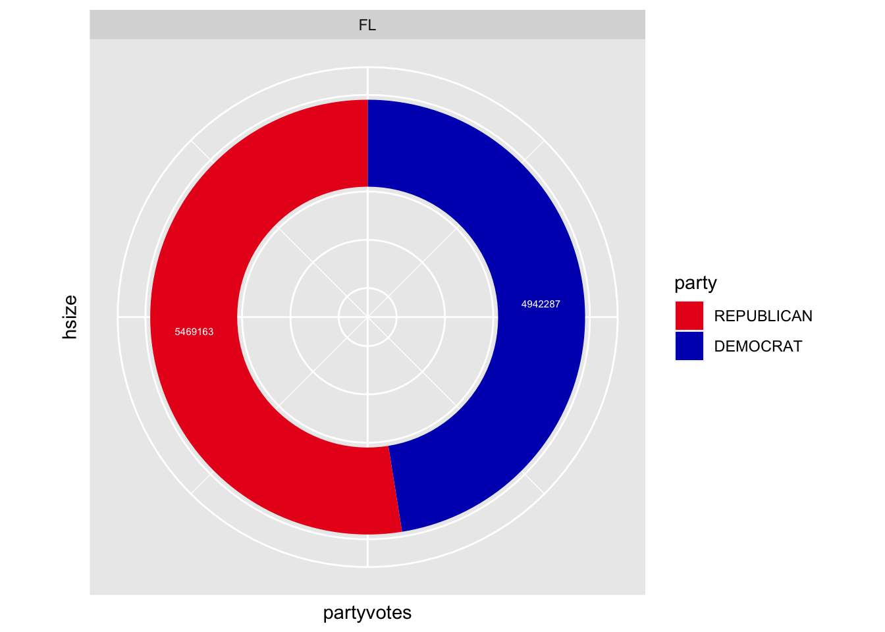
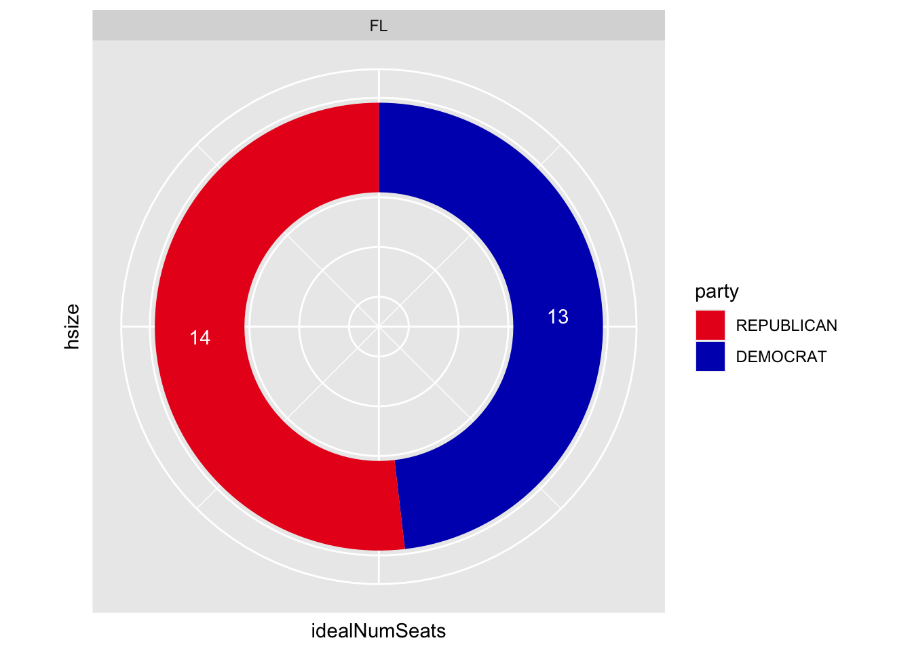
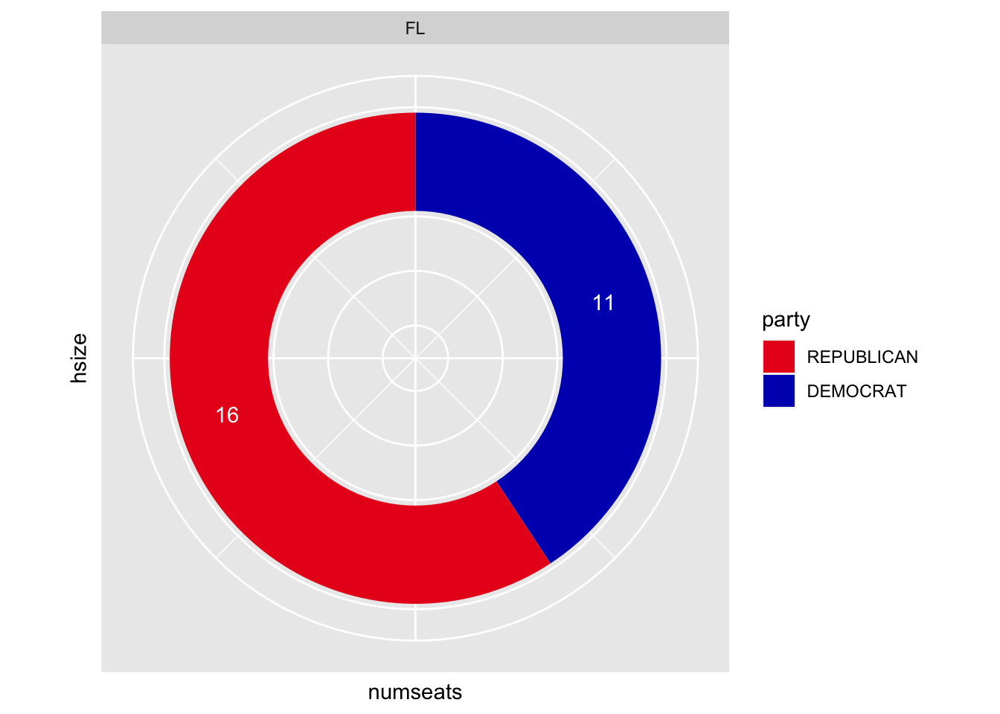

The purpose of this project is to demonstrate the disparity between the number of votes a party earns in a US house election and the amount of house seats they actually earn. Imagine a party that earns enough votes across a state that they should* get three house seats. That party might only earn two seats. Or more, or fewer. This could be because of gerrymandering, or some other, more specific and unique set of circumstances. In order to demonstrate the code and its functionality, I used the state of Florida and the year 2020 as inputs.
Enter the year (between 1976 and 2020) and the postal code of the state you want to observe, and three graphs will be created. The first graph will show how many votes each party earned that year in each state. The second shows how many house seats that party should* have, based on the number of votes earned and the total number of available seats. The third graph shows the actual election results: how many seats were earned by each party.
By showing these comparisons, I hope to demonstrate how disproportional some elections are in the US House. I also hope to bring attention to the most severe offenders. The most disproportional state elections as represented by this data could be investigated further. Is gerrymandering occurring there?
** The assumption made when creating these representations is a big one. To say a party should earn seats because of the number of votes it got is assuming that people vote for specific parties above all other considerations. People don’t just vote for parties, though, they vote for candidates. And based on which existing district you live in, your vote might sway from one party to another. However, especially considering America’s current political climate, I don’t believe it is quite a stretch to say that most voters consider their candidate’s party first. Considering this, the data should not stand as a direct condemnation of states for having unfair elections. The graphs created here should instead stand as a jumping-off point for further investigation. Look at how disproportionate some states are, and ask why.
Why do some states have third parties, which should earn seats but don’t?
Why does one state have a Republican party with three seats too many?
Why does another state have a Democrat party with three seats too many?
Why does one state seem consistently disproportionate over the years?
Questions like these are important to ask, and the data here will help you arrive at them.
The data used comes from the MIT Election Lab.
library(tidyverse)## ── Attaching core tidyverse packages ──────────────────────── tidyverse 2.0.0 ──
## ✔ dplyr 1.1.4 ✔ readr 2.1.4
## ✔ forcats 1.0.0 ✔ stringr 1.5.1
## ✔ ggplot2 3.4.4 ✔ tibble 3.2.1
## ✔ lubridate 1.9.3 ✔ tidyr 1.3.0
## ✔ purrr 1.0.2
## ── Conflicts ────────────────────────────────────────── tidyverse_conflicts() ──
## ✖ dplyr::filter() masks stats::filter()
## ✖ dplyr::lag() masks stats::lag()
## ℹ Use the conflicted package (<http://conflicted.r-lib.org/>) to force all conflicts to become errorsvoting_data <- read.csv("1976-2020-house (1).csv")Which year do you want to look at?
#year.input <- readline(prompt="Enter a year between 1976 and 2020: ")
#Adding default values:
year.input <- 2020
voting_data_clean <- voting_data %>% filter(year == year.input) %>% select(state_po, district, candidate, party, candidatevotes) num_districts <- voting_data_clean %>% group_by(state_po) %>% summarise(district_total = max(district)) %>% arrange(district_total)
num_districts <- num_districts%>% mutate_all(funs(replace(., .== 0, 1)))## Warning: `funs()` was deprecated in dplyr 0.8.0.
## ℹ Please use a list of either functions or lambdas:
##
## # Simple named list: list(mean = mean, median = median)
##
## # Auto named with `tibble::lst()`: tibble::lst(mean, median)
##
## # Using lambdas list(~ mean(., trim = .2), ~ median(., na.rm = TRUE))
## Call `lifecycle::last_lifecycle_warnings()` to see where this warning was
## generated.voting_data_clean <- voting_data_clean %>% group_by(state_po) %>% mutate(num_districts = max(district)) %>% mutate_all(funs(replace(., .== 0, 1))) %>% ungroup()## `mutate_all()` ignored the following grouping variables:
## • Column `state_po`
## ℹ Use `mutate_at(df, vars(-group_cols()), myoperation)` to silence the message.## Warning: `funs()` was deprecated in dplyr 0.8.0.
## ℹ Please use a list of either functions or lambdas:
##
## # Simple named list: list(mean = mean, median = median)
##
## # Auto named with `tibble::lst()`: tibble::lst(mean, median)
##
## # Using lambdas list(~ mean(., trim = .2), ~ median(., na.rm = TRUE))
## Call `lifecycle::last_lifecycle_warnings()` to see where this warning was
## generated.voting_data_clean <- voting_data_clean %>% group_by(state_po) %>% mutate(totalvotes = sum(candidatevotes)) %>% ungroup()
voting_data_clean <- voting_data_clean %>% group_by(state_po, party) %>% mutate(partyvotes = sum(candidatevotes)) %>% mutate(proportion = partyvotes / totalvotes) %>% mutate(idealNumSeats = round((proportion * num_districts), digits = 0))
proportional_districts <- voting_data_clean %>% group_by(state_po, party) %>% select(state_po, party, partyvotes, idealNumSeats)
finalframe <- proportional_districts %>% distinct(state_po, party, partyvotes, idealNumSeats)We’ll get rid of the parties that should win 0 seats
finalframe2 <- finalframe %>% filter(idealNumSeats != 0) %>% replace(.=="", "NO PARTY LISTED")Now that I have the ideal proportional division of house seats per party in each state, let’s take a look at the real numbers.
clean_data_2 <- voting_data_clean %>% select(state_po, district, candidate, party, candidatevotes) %>% group_by(state_po, district) %>% mutate(winner=ifelse(candidatevotes==max(candidatevotes, na.rm=TRUE),T,F))
clean_data_3 <- clean_data_2 %>% filter(winner == T)
num_seats_district <- clean_data_3 %>% select(state_po, party) %>% group_by(state_po, party) %>% mutate(numseats=n())## Adding missing grouping variables: `district`num_seats_state <- num_seats_district %>% select(state_po, party, numseats) %>% distinct(state_po, party, numseats)Now I have two useful tables: one that gives us the number of seats each party currently has (num_seats_state), and one that gives us the number of seats each party “deserves” based on the number of votes it received (finalframe2).
#state.input <- readline(prompt="Enter 2-Letter State Postal Code: ")
#Adding default values:
state.input <- 'FL'
this_state_ideal <- finalframe2 %>% arrange(match(party, c("DEMOCRAT", "REPUBLICAN"))) %>% mutate(party = factor(x = party, levels = party)) %>% filter(state_po == state.input)
this_state_current <- num_seats_state %>% arrange(match(party, c("DEMOCRAT", "REPUBLICAN"))) %>% mutate(party = factor(x = party, levels = party)) %>% filter(state_po == state.input)
this_state_ideal## # A tibble: 2 × 4
## # Groups: state_po, party [2]
## state_po party partyvotes idealNumSeats
## <chr> <fct> <dbl> <dbl>
## 1 FL DEMOCRAT 4942287 13
## 2 FL REPUBLICAN 5469163 14this_state_current## # A tibble: 2 × 3
## # Groups: state_po, party [2]
## state_po party numseats
## <chr> <fct> <int>
## 1 FL DEMOCRAT 11
## 2 FL REPUBLICAN 16hsize <- 2
plot1 <- ggplot(data = this_state_ideal, aes(x = hsize, y = partyvotes, fill = party)) +
geom_bar(stat = "identity", position = position_fill()) +
geom_text(aes(label = partyvotes), color = "white", size = 2, position = position_fill(vjust = 0.5)) +
coord_polar(theta = "y") + xlim(c(0.2, hsize + 0.5)) +
facet_wrap(~ state_po, nrow = 1) +
scale_fill_manual(values = c("#E9141D", "#0015BC", 'orange', 'green', 'purple'))
plot1 + theme(axis.text.x=element_blank(),
axis.ticks.x=element_blank(),
axis.text.y=element_blank(),
axis.ticks.y=element_blank())
plot2 <- ggplot(data = this_state_ideal, aes(x = hsize, y = idealNumSeats, fill = party)) +
geom_bar(stat = "identity", position = position_fill()) +
geom_text(aes(label = idealNumSeats),color = "white", position = position_fill(vjust = 0.5)) +
coord_polar(theta = "y") + xlim(c(0.2, hsize + 0.5)) +
facet_wrap(~ state_po, nrow = 1) +
scale_fill_manual(values = c("#E9141D", "#0015BC", 'orange', 'green', 'purple'))
plot2 + theme(axis.text.x=element_blank(),
axis.ticks.x=element_blank(),
axis.text.y=element_blank(),
axis.ticks.y=element_blank())
plot3 <- ggplot(data = this_state_current, aes(x = hsize, y = numseats, fill = party)) +
geom_bar(stat = "identity", position = position_fill()) +
geom_text(aes(label = numseats),color = "white", position = position_fill(vjust = 0.5)) +
coord_polar(theta = "y") + xlim(c(0.2, hsize + 0.5)) +
facet_wrap(~ state_po, nrow = 1) +
scale_fill_manual(values = c("#E9141D", "#0015BC", 'orange', 'green', 'purple'))
plot3 + theme(axis.text.x=element_blank(),
axis.ticks.x=element_blank(),
axis.text.y=element_blank(),
axis.ticks.y=element_blank())